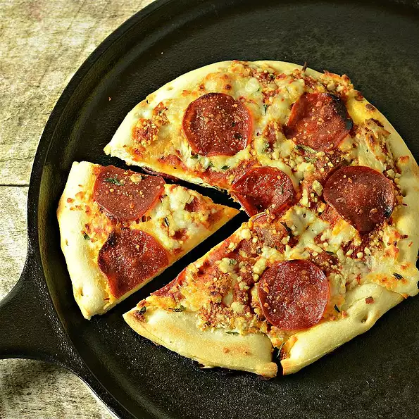

In the wild pizza recipe

Let's get comfortable camping, lets cook a pizza!
Who on earth said pizza can only be enjoyed as a takeaway, grease dripping delight on a
saturday night watching the TV?
Let's make an unforgettable pizza and be the
legend of the campsite!
Good to know info!
- Preparation time: 5 minuets
- Cook time: 15 minuets
- Servings: 1 Pizza
Ingredients
- 1 tub of cool/ frozen pizza dough
- 1 jar of pizza sauce
- 2 cups of mozzarella cheese
- Choice of toppings - Pepperoni, mushrooms, vegetables etc
Lets get this pizza cooking!
- Oil a cast iron pan or baking sheet, pizza stone etc.
- Take the refrigerated dough and spread in the pan.
- Place on the fire or the BBQ. Cook until the bottom has browned.
- Remove from the fire and flip the crust in the pan.
- Brush with pizza sauce, place your toppings on and then cover in cheese.
- Return to the heat and cook until the crust is done underneath and the toppings are warm.
- Remove and enjoy!
Oh those country roads, take me home!